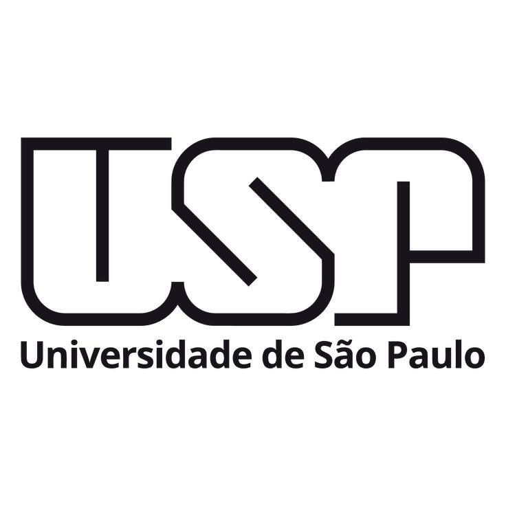

|  | UNIVERSIDADE DE SÃO PAULO - campus São Carlos | |
Notícias |
Eventos |
|
|
Atenção! Candidatos da FUVEST e do Enem USP podem manifestar interesse em lista de espera. |
Não Perca! Conhece a jornada do empreendedorismo na USP? Acompanhe em evento on-line |
|
|
Atenção! “Manual do Calouro” apresenta a USP aos novos ingressantes |
Não Perca! Em aula magna no campus de Bauru, reitor da USP vai abordar pesquisas sobre tumores cerebrais |
|
|
Atenção! USP implanta Auxílio-Saúde para servidores técnicos e docentes |
Não Perca! Evento on-line discute a nova ferramenta de inteligência artificial ChatGPT |
|
|
|
||
Endereços: Área 1 - Av. Trabalhador são-carlense, 400 | Área 2 - Av. João Dagnone, 1100, São Carlos/SP |
||